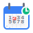
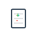

高效待办清单
常见问题
功能亮点
AI助手设置
备份与恢复
反馈建议
赞赏支持
隐私政策
谷歌插件
AI 助手

每日清单
每日
每周一
每周二
每周三
每周四
每周五
每周六
每周日
不重复
+
本月待办
导出历史
导入数据
下载模板
+
未来计划
+

记账本
设置预算
年度报告
导出历史
导入数据
下载模板
本月统计
+
日期
项目
金额
付款方式
详情
操作
×
统计报告
已完成任务趋势 (按标签)
近30天 (日)
近半年 (周)
近1年 (月)
近5年 (年)
已完成任务标签分布
今日
本月
今年
每日清单
本月待办
未来计划
记账本
×
历史快照 (最近14天)
（选择一个版本以恢复）